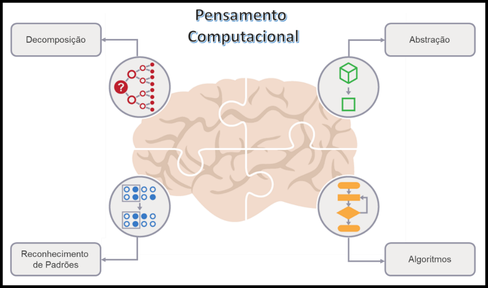

Pilares da Cultura
Trate a complexibilidade com simplicidade.
Acredito que buscar conquistas, sejam grandes ou pequenas, são essencias para o desenvolvimento pessoal e da coorporação, mas vale lembrar que quando o grupo busca o objetivo em comum a trajetoria acaba sendo mais fácil e satisfatória.
Entender o problema de maneira sistematica, ajuda a encontrar soluções eficazes.
Este pilar também é importante para entendermos melhor onde devemos priorizar, além de tornar a comunicação mais clara